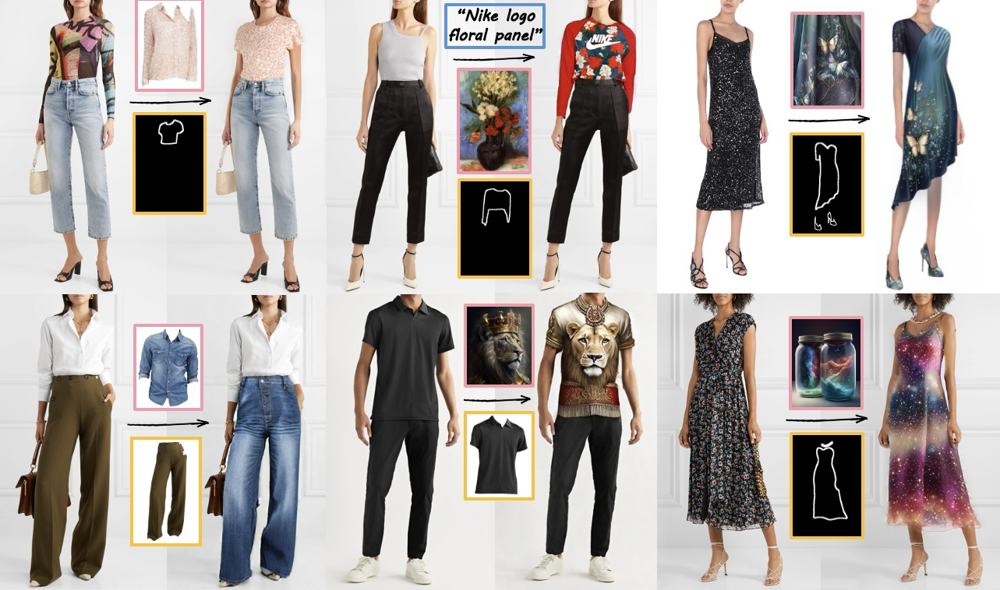
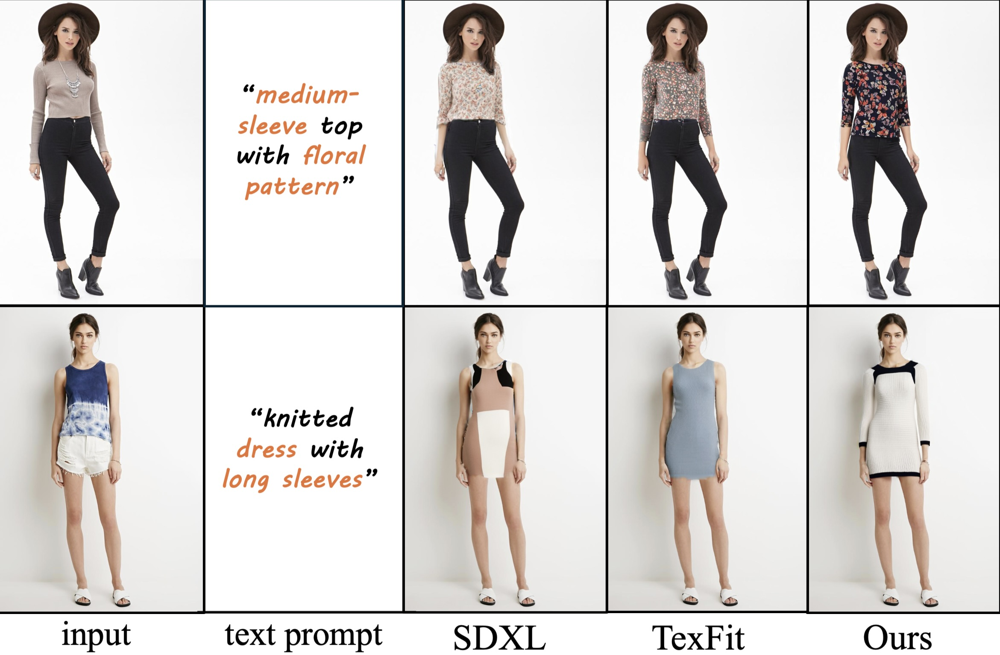
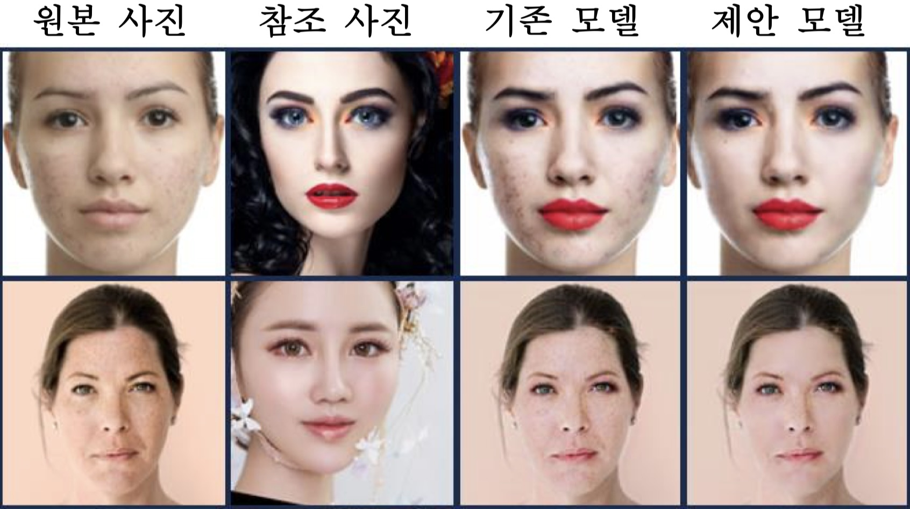
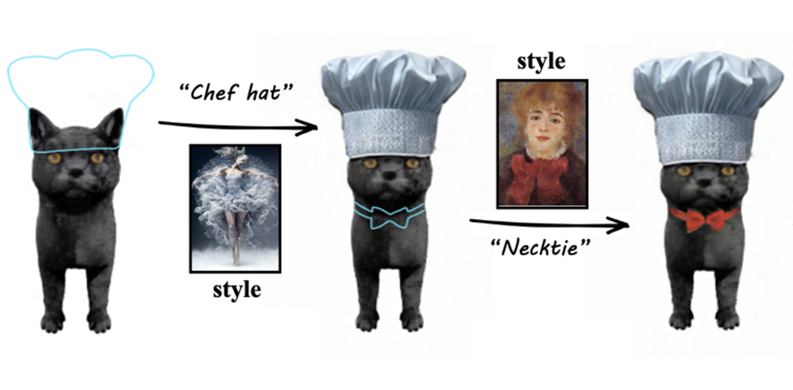

Research publications in AI

VISTA: Virtual Styling and Try-On from Any Design
CVPR 2026, under reviewProblem: 기존 연구는 디자인 소스가 의류 이미지로 제한되고, 액세서리 포함 전체 가상 체험 기능 미지원
Approach: 예술 작품·자연 이미지 등 다양한 디자인 소스를 활용 가능하고 신발·가방 등 액세서리를 포함한 전체 가상 착장 기능을 지원하는 방법 제안
Result: 모든 데이터셋·지표에서 SOTA 달성, 특히 Sketch 점수의 경우 +48.54% 향상
Tech: Virtual Try-ON(VTON), Style Transfer, Diffusion Model

텍스트 기반 패션 이미지 편집
IPIU 2026, under reviewProblem: 기존 연구는 텍스트 프롬프트로 의류의 질감·색상은 편집 가능하지만, 형태에 대해서는 편집 불가
Approach: 텍스트 기반 의류 형태 파싱 맵 생성과 의류 내부 속성 생성을 분리한 2-stage 구조 제안
Result: CLIP 텍스트 점수 +7.17% 향상
Tech: Diffusion Model

얼굴 잡티 제거를 통한 화장 전이 성능 개선
KCC 2024Problem: 잡티가 있는 얼굴에 makeup transfer할 경우, 잡티가 그대로 남아있거나 오히려 더 부각되는 문제 발견
Approach: 적응형 이진화로 잡티를 검출한 뒤 주변 피부색으로 변환하는 잡티 제거 모듈 설계
Result: makeup transfer 성능 +2.1% 향상
Tech: makeup transfer, GAN

멀티 모달 프롬프트를 통한 확산 모델 기반 이미지 편집
IPIU 2025Problem: 기존 연구는 단일·이중 모달에 의존해 구조·콘텐츠·스타일을 동시에 제어하기 어려움
Approach: 블록 별 구분으로 세 조건이 간섭없이 조화롭게 반영되도록 함
Result: 스케치 점수 +8.10%, 이미지 점수 +7.87%, 텍스트 점수 +2.38% 증가
Tech: Style Transfer, Diffusion Model